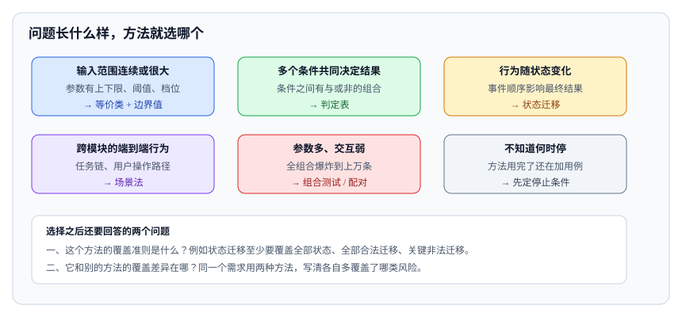

<script type="application/json" id="tb-manifest">
{
  "schema": "tb/1",
  "id": "L-002-001",
  "title": "测试设计方法工具箱",
  "module": "M02",
  "concepts": [
    "test-design-techniques"
  ],
  "target_level": "L3",
  "minutes": 55,
  "objectives": [
    "能按问题形状选择测试设计方法",
    "能为同一需求组合多种方法并说明覆盖差异",
    "能定义用例停止条件"
  ],
  "prerequisites": [
    "risk-grading"
  ],
  "exercises": [
    "EX-008-01",
    "EX-008-02",
    "EX-008-03"
  ],
  "resources": [
    "R-29119-4",
    "R-ISTQB"
  ],
  "objective_map": {
    "O1": [
      "EX-008-01"
    ],
    "O2": [
      "EX-008-02"
    ],
    "O3": [
      "EX-008-03"
    ]
  }
}
</script>
<article class="tb-lesson">
  <header>
    <p class="tb-eyebrow">M01 · 测试策略、设计与预言</p>
    <h1>测试设计方法工具箱</h1>
    <p><strong>学完你能：</strong>按问题形状选择等价类、边界值、判定表、状态迁移、场景法或组合测试，并为自动泊车写出一组覆盖不同风险的用例。</p>
  </header>
  <section class="tb-retrieval">
    <h2>开课前 3 分钟：先回忆</h2>
    <ol>
      <li>判定表适合什么形状的问题？</li>
      <li>状态迁移必须覆盖哪四类路径？</li>
    </ol>
    <details>
      <summary>参考答案</summary>
      <p>判定表适合多个条件共同决定动作；状态迁移要覆盖合法、非法、超时和异常恢复路径。</p>
    </details>
  </section>
  <aside>
    <p><strong>本课主读：</strong>R-29119-4《ISO/IEC/IEEE 29119-4:2021 测试技术》。重点看等价类、边界值、判定表、状态迁移和组合测试的定义与覆盖准则。</p>
  </aside>
  <section>
    <h2>一、15,625 种组合怎么测</h2>
    <p>某仓储机器人有 6 个影响抓取成功率的参数：货箱重量、货箱材质、抓取高度、机械臂速度、夹爪开度、地面平整度。每个参数取 5 个水平，组合起来有 5 的 6 次方，也就是 15,625 种。团队不可能全测，但如果只测“典型值”，又会在现场遇到“轻质光滑箱子 + 高位 + 高速 + 湿滑地面”这种组合失效。</p>
    <p>测试设计方法要解决的，就是如何在有限用例里覆盖最值得覆盖的组合。方法本身没有高低之分，关键是和问题的形状匹配。</p>
  </section>
  <section>
    <h2>二、方法选择地图</h2>
    <figure>
      
      <figcaption>图 1：先认出问题属于哪一种形状，再挑方法；选完还要写清该方法自己的覆盖准则。</figcaption>
    </figure>
    <table>
      <thead>
        <tr><th>问题的形状</th><th>首选方法</th><th>能发现</th><th>发现不了</th></tr>
      </thead>
      <tbody>
        <tr><td>输入有区间、类别</td><td>等价类 + 边界值</td><td>分类错误、边界越界</td><td>多条件组合、时序问题</td></tr>
        <tr><td>多个条件决定一个动作</td><td>判定表</td><td>条件组合遗漏、规则冲突</td><td>连续量、状态历史</td></tr>
        <tr><td>系统有明确状态</td><td>状态迁移</td><td>非法跳转、遗漏状态、死锁</td><td>状态内部的计算错误</td></tr>
        <tr><td>端到端业务流程</td><td>场景法</td><td>流程断点、用户路径问题</td><td>参数级边界、组合爆炸</td></tr>
        <tr><td>多参数组合爆炸</td><td>组合 / 配对测试</td><td>两两交互缺陷</td><td>三阶及以上交互、具体数值边界</td></tr>
        <tr><td>输入输出关系可变换</td><td>蜕变测试</td><td>关系违反、结果不一致</td><td>完全错误的基准</td></tr>
      </tbody>
    </table>
  </section>
  <section>
    <h2>三、等价类与边界值</h2>
    <p>等价类把输入空间分成若干类，假设同一类里的值对系统行为相同。例如把“障碍物距离”分成“远、近、危险、无效”四类。边界值是等价类的补充：错误最常出现在分类的边界上，所以每个边界取内外两侧。</p>
    <p>机器人例子：避障停车距离设置为 0.8 m，有效范围可能是 0.2–2.0 m。测试至少覆盖 0.19、0.20、0.80、2.00、2.01，以及非数字、负数和极大值。只测 0.8 这个“典型值”无法发现单位错误或边界判断错误。</p>
    <p>常见错误是把等价类和边界值混成“随便取几个值”。等价类要有明确的分类依据，边界值要写出为什么选这个数，而不是为了凑数量。</p>
  </section>
  <section>
    <h2>四、判定表与状态迁移</h2>
    <p>当多个条件共同决定一个动作时，判定表能系统列出所有规则。例如安全门控制：门关闭、急停未触发、模式为自动、人员检测无侵入，四个条件组合决定“允许运行 / 降速 / 停止”。判定表的重点是“规则是否完整、是否冲突”。如果两条规则对同一组条件给出不同动作，说明需求有歧义；如果某个条件组合没有规则，说明有遗漏。</p>
    <p>机器人通常有明显的状态：待机、导航、作业、充电、故障、急停。状态迁移测试要覆盖合法迁移、非法迁移、超时迁移和异常恢复。重点是那些“从异常状态回到正常状态”的路径，因为现场最容易在这里卡死。不要只画一张漂亮的状态图，却不测非法路径。</p>
  </section>
  <section>
    <h2>五、场景法与组合测试</h2>
    <p>场景法从用户或系统的真实流程出发，把多个步骤串成端到端用例。例如“接单 → 取货 → 避障 → 送达 → 充电”。场景法擅长发现流程断点和用户路径问题，但不擅长覆盖参数级边界。</p>
    <p>组合测试解决参数爆炸。配对测试保证任意两个参数的取值组合至少出现一次，通常能用远少于全组合的用例覆盖大部分交互缺陷。以上面的 6 参数 × 5 水平为例，全组合 15,625 条；配对测试通常只需 30–40 条。但配对测试不保证三阶及以上交互，也不替代边界值和安全关键组合。</p>
    <p>正确做法是“组合测试 + 高风险全组合 + 边界值”。对安全相关参数，不能只靠配对；对普通参数，可以用配对压缩。</p>
  </section>
  <section>
    <h2>六、实例：自动泊车入位</h2>
    <table>
      <thead>
        <tr><th>方法</th><th>用例</th><th>覆盖的风险</th></tr>
      </thead>
      <tbody>
        <tr><td>等价类</td><td>标准车位、窄车位、斜列车位、无效车位</td><td>车位识别分类错误</td></tr>
        <tr><td>边界值</td><td>车位宽度刚好等于最小值、少 1 cm、多 1 cm</td><td>边界判断和单位错误</td></tr>
        <tr><td>状态迁移</td><td>搜索 → 倒车 → 调整 → 完成；中途开门、挂挡、急停</td><td>非法跳转、卡死、恢复失败</td></tr>
        <tr><td>场景法</td><td>后方来车、行人穿过、车位被占、地面湿滑</td><td>动态障碍和真实流程</td></tr>
        <tr><td>组合测试</td><td>车位类型 × 光照 × 地面 × 车辆负载</td><td>多因素交互</td></tr>
      </tbody>
    </table>
    <p>这套组合能回答“泊车能不能完成、边界会不会出错、异常能不能恢复”。如果只做场景法，会漏掉 1 cm 的边界问题；如果只做边界值，会漏掉行人横穿时的状态处理。</p>
  </section>
  <section>
    <h2>七、停止条件</h2>
    <p>没有停止条件，用例会无限膨胀。推荐为每种方法写一条可检查的停止规则：</p>
    <ul>
      <li>等价类：每个有效类和无效类至少一条。</li>
      <li>边界值：每个边界的内外两侧至少一条。</li>
      <li>判定表：每条规则至少一条，冲突和缺失规则已澄清。</li>
      <li>状态迁移：所有状态、合法迁移、非法迁移至少一次。</li>
      <li>场景法：每个高风险用户流程至少一条正常和一条异常。</li>
      <li>组合测试：达到约定的配对覆盖度，安全关键组合全组合。</li>
    </ul>
    <p>停止条件要写进测试计划，并在评审时逐条确认。否则“再补几条”会变成默认状态。</p>
  </section>
  <section>
    <h2>八、常见误区</h2>
    <ul>
      <li><strong>只测典型值。</strong>等价类没有分类依据，边界值没有内外两侧。</li>
      <li><strong>判定表只列正常规则。</strong>不测冲突和缺失规则，等于没做完整性检查。</li>
      <li><strong>状态图不测非法迁移。</strong>现场卡死往往发生在异常路径。</li>
      <li><strong>配对测试替代安全组合。</strong>安全关键参数必须全组合或专项验证。</li>
      <li><strong>用例数量当覆盖度。</strong>没有停止条件的用例集无法证明覆盖。</li>
      <li><strong>方法堆砌。</strong>同一需求用五种方法各写一遍，重复而不增加覆盖。</li>
    </ul>
  </section>
  <section>
    <h2>九、检查清单</h2>
    <ul>
      <li>是否根据问题形状选择了方法，而不是习惯性只用一种？</li>
      <li>等价类是否有明确分类依据？边界值是否覆盖内外两侧？</li>
      <li>判定表是否覆盖所有规则，并检查冲突和缺失？</li>
      <li>状态迁移是否覆盖合法、非法、超时和恢复路径？</li>
      <li>组合测试是否配合了高风险全组合和边界值？</li>
      <li>每种方法是否有可检查的停止条件？</li>
    </ul>
  </section>
  <section>
    <h2>十、组合测试的计算示例</h2>
    <p>仍以仓储抓取为例：6 个参数、每个 5 个水平，全组合是 15,625 条。如果每条用例执行 5 分钟，全组合需要约 1,300 小时，显然不可行。配对测试保证任意两个参数的取值组合至少出现一次，通常只需 30–40 条，执行时间降到 2.5–3.3 小时。</p>
    <table>
      <thead>
        <tr><th>策略</th><th>用例数（约）</th><th>执行时间</th><th>能发现</th><th>发现不了</th></tr>
      </thead>
      <tbody>
        <tr><td>全组合</td><td>15,625</td><td>1,300 小时</td><td>所有组合</td><td>—</td></tr>
        <tr><td>配对</td><td>30–40</td><td>2.5–3.3 小时</td><td>两两交互</td><td>三阶及以上交互、具体边界</td></tr>
        <tr><td>高风险全组合 + 其余配对</td><td>200–300</td><td>17–25 小时</td><td>高风险全组合 + 普通两两交互</td><td>未识别的三阶交互</td></tr>
        <tr><td>只测典型值</td><td>1</td><td>5 分钟</td><td>正常路径</td><td>几乎所有组合和边界</td></tr>
      </tbody>
    </table>
    <p>实际项目通常选第三种：把安全相关或高风险参数做全组合，其余参数用配对压缩。这样既控制了工作量，又没有把安全关键组合交给概率。</p>
  </section>
  <section>
    <h2>十一、评审与面试追问</h2>
    <ul>
      <li><strong>问：等价类和边界值有什么区别？</strong>答：等价类把输入分成行为相同的类，边界值取分类边界的内外两侧；两者常一起用。</li>
      <li><strong>问：判定表和状态迁移怎么选？</strong>答：多个条件组合决定动作时用判定表；系统有明显状态和迁移时用状态迁移。</li>
      <li><strong>问：配对测试能替代全组合吗？</strong>答：不能。配对只保证两两覆盖，安全关键组合和已知三阶交互要单独覆盖。</li>
      <li><strong>问：怎么证明用例覆盖够了？</strong>答：为每种方法定义停止条件，例如所有等价类、所有边界、所有规则、所有状态迁移至少一次。</li>
      <li><strong>问：场景法和用例有什么区别？</strong>答：场景法是设计方法，产出的仍是用例；它强调端到端流程，而不是参数级覆盖。</li>
    </ul>
  </section>
  <div data-tb-exercise="EX-008-01"></div>
  <div data-tb-exercise="EX-008-02"></div>
  <div data-tb-exercise="EX-008-03"></div>
  <section>
    <h2>十二、用例设计记录模板</h2>
    <p>每条用例至少记录以下字段，评审时才能判断“为什么这么设计”：</p>
    <table>
      <thead>
        <tr><th>字段</th><th>示例</th></tr>
      </thead>
      <tbody>
        <tr><td>需求/风险</td><td>R-012 避障停车；风险 H-03</td></tr>
        <tr><td>方法</td><td>边界值 + 状态迁移</td></tr>
        <tr><td>输入</td><td>障碍距离 0.79 m，速度 1.2 m/s，状态=导航</td></tr>
        <tr><td>预期</td><td>0.5 m 内停车，减速度不超过 2 m/s²</td></tr>
        <tr><td>覆盖</td><td>边界内侧、动态障碍、导航状态</td></tr>
        <tr><td>停止条件</td><td>每个边界内外各一条，已满足</td></tr>
      </tbody>
    </table>
    <p>没有“需求/风险”和“覆盖”字段的用例，很难证明它为什么存在；没有“停止条件”的用例集，很难判断什么时候可以停。记录不需要很长，但必须能让评审人沿着一条用例回到风险和需求。</p>
    <p>方法组合也有顺序：先用等价类和边界值确定输入空间，再用判定表或状态迁移处理条件和状态，最后用场景法串成端到端流程。顺序反了，常常会先用场景法写出一堆长用例，回头发现边界和状态都没覆盖。组合测试则放在最后，用配对压缩已经识别出的参数组合。</p>
    <p>停止条件也不是一次性的。需求变更、参数范围变化或现场出现新失效模式时，要重新评估停止条件是否仍然成立。一个一年没变的停止条件，很可能已经和现在的风险脱节。每条停止条件都应该对应一个可检查的证据，例如覆盖率报告、用例清单或评审记录。没有证据的停止条件，只是口头约定；评审时要逐条确认，否则用例集会一直膨胀下去。评审记录本身也是证据，它能让下一次复用同一套停止条件。</p>
  </section>
  <aside class="tb-callout" data-tone="warn">
    <p><strong>常见误区：</strong>配对测试可以替代安全关键组合和边界值。配对只压缩组合，不覆盖阈值附近的极端取值。</p>
  </aside>
  <section>
    <h2>小结</h2>
    <p>测试设计方法的选择，本质上是对“问题形状”的判断：输入域用等价类和边界值，条件组合用判定表，状态用状态迁移，业务流程用场景法，参数爆炸用组合测试。真正的高手不是会用最多方法，而是能用最少的方法覆盖最值得覆盖的风险，并且说清楚哪些风险没有被覆盖。</p>
  </section>
</article>
